Start here: how to add a name and print your folding phone stand
Thank you for your purchase! This little keychain folds flat for your keys, flips open into a phone stand, and has a can tab lifter at the tail. The side has a name that you can change before printing.
What's in your download
SMALL & LARGE Bambu 3MF EditableName
Bambu Studio project: colours set, name box ready to rename. Start here if you have Bambu Studio.
SMALL & LARGE STL files BODY + FLAP
Plain shapes for any printer and slicer. Add a name in your slicer, or print plain.
Fredoka font
The free font used for the name (SIL Open Font License).
This is a digital download
You bought 3D printing files. Nothing is shipped. To make the stand you need a 3D printer (yours, a friend's, a library or a print service). You may sell your prints: see page 8.
Two sizes
Small for phones up to 12 mm thick (with case). Large for thick or rugged cases up to 13.5 mm. Not sure? Measure your phone in its case (page 2).
Phone Stand Keychain · Seller Edition1
Page 2 · Getting ready
Before You Start
Pick your size, pick your file, and you're ready.
1. Pick your size
Small
Large
Phone + case thickness
up to 12 mm
up to 13.5 mm
Folded size
70.7 × 35 × 11.5 mm
76.9 × 35 × 12.5 mm
Opens to
about 85°, holding the phone screen at about 67° from the desk
Built in
keyring hole (5 mm) · can tab lifter at the tail · flat name area on the side
Measure your phone in its case at its thickest point (the camera bump does not count if it is not at the bottom edge).
2. Pick your file
Bambu 3MF
STL
Use with
Bambu Studio
Any slicer (OrcaSlicer, PrusaSlicer, Cura…)
Name
✔ ready, just retype it
Add it yourself (page 5)
Colours
✔ navy, orange, white set
✘ you choose
Plates
✔ 2 plates set up
BODY and FLAP files
Screenshots: Bambu Studio 2.8 and OrcaSlicer 2.4. Other versions may look a little different.
3. Printer & filament
Any FDM printer with a bed of at least 100 × 100 mm. PLA is suggested.
Two pieces, snapped together
The body and the flap print separately (on their side, no supports) and snap together for good after printing (page 6).
Install the font (optional)
Double-click Fredoka-Bold.ttf and choose Install. Do it before opening your slicer. Any other bold font works too.
The Bambu Studio route in 5 steps
1Open the SMALL or LARGE 3MF
➜
2Click text_shape, then the Ta tool
➜
3Type the name
➜
4Slice and print plate 1 (body)
➜
5Print plate 2 (flap), snap together
Phone Stand Keychain · Seller Edition2
Method 1 · Bambu Studio
Change the name in Bambu Studio
The project already has a white name that says NAME on the side of the stand. You just retype it.
1
Open the project
File › Open Project… and pick PhoneStand-SMALL-Bambu-EditableName.3mf (or LARGE). It opens with three colours set up 1: the body and name on plate 12 and the flap on plate 23.
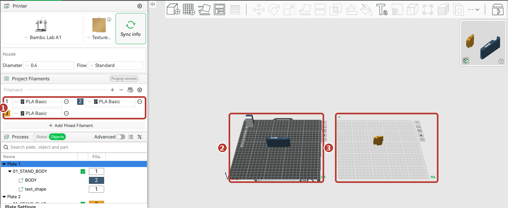
2
Click text_shape, then the Ta button
In the Objects list on the left, click text_shape1. Then click the TaText shape button at the top 2.
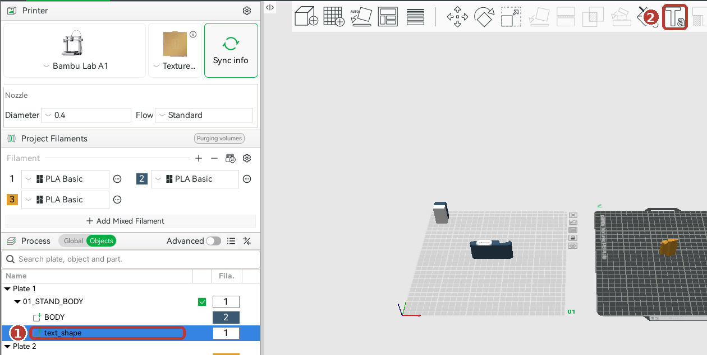
Important: click text_shape in the list first. If you click empty space in the 3D view and then Ta, Bambu Studio makes a new, separate text called "Text" instead of editing the name. If that happens, press Ctrl+Z and try again.
Phone Stand Keychain · Seller Edition3
Method 1 · Bambu Studio, continued
Type it, slice it, print it
3
Type the name
1Input text: delete NAME and type the name.
2Font: Fredoka is set. Want another? Click it and type to search.
3Size:7 mm. Lower it for long names.
4Thickness:0.6 mm (how far the letters stand up).
5Operation: leave on Part.
Click return (top left of the 3D view) when you're done.
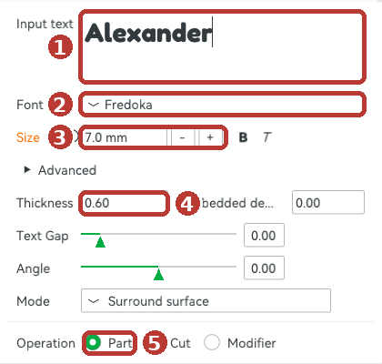
4
Check it fits
Keep every letter on the flat part of the side, left of the dip where the phone sits. At 7 mm, a 9-letter name like Alexander fits the Small. To move the name, drag the small yellow square in its middle.
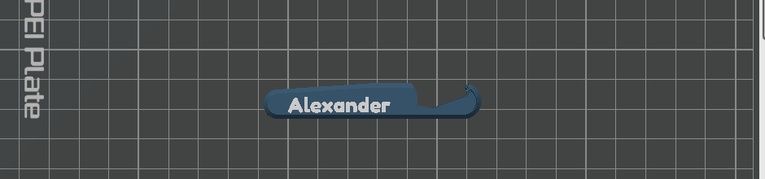
5
Slice and print plate 1
With plate 1 selected 1, click Slice plate. You should see 1 filament change2 (white starts at the name) and a top height of 35.603. Then Print plate.
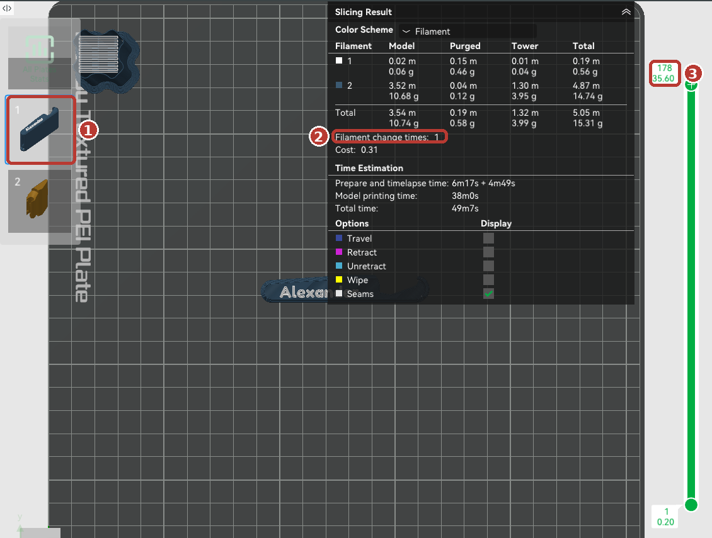
6
Then plate 2 (the flap)
Click the plate 2 thumbnail 1, slice, print. It is one colour, so 0 filament changes2.
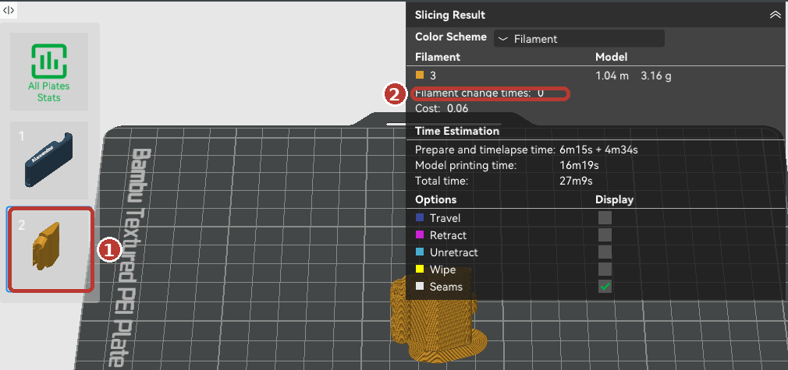
Slicer estimates on a Bambu Lab A1: plate 1 about 50 min, plate 2 about 27 min.
Phone Stand Keychain · Seller Edition4
Method 2 · Any other printer
STL files + your own name
The STL files are plain shapes with an empty name area on the side. Here is how to add a name in OrcaSlicer (free). PrusaSlicer and Bambu Studio have a similar text tool.
1
Open the BODY file
Drag PhoneStand-SMALL-BODY.stl (or LARGE) into OrcaSlicer, or use File › Import. It lies on its side, name area facing up. Don't turn it.
2
Right-click the side
Zoom in, then right-click the flat part of the side, left of the dip. Choose Add Part1 › Text2. The text appears where you clicked.
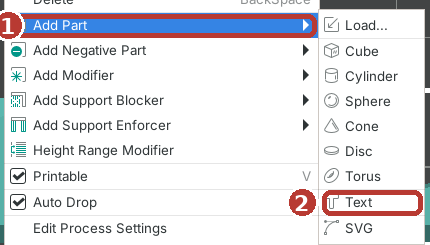
3
Type the name and settings
1Type the name in the text box.
2Font: type Fred, choose Fredoka.
3Height:7 mm (same as Size in Bambu Studio).
4Depth:0.6 mm. Leave Operation on Join.
5Click Done.
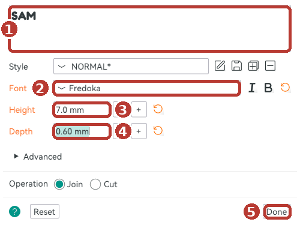
4
Slice and check
Click Slice plate. The top height should read 35.601 and the name should show 2. Then print the FLAP STL the same way (no name needed).
Slicer estimate on an Ender-3 V3 SE profile: about 45 min for the body.
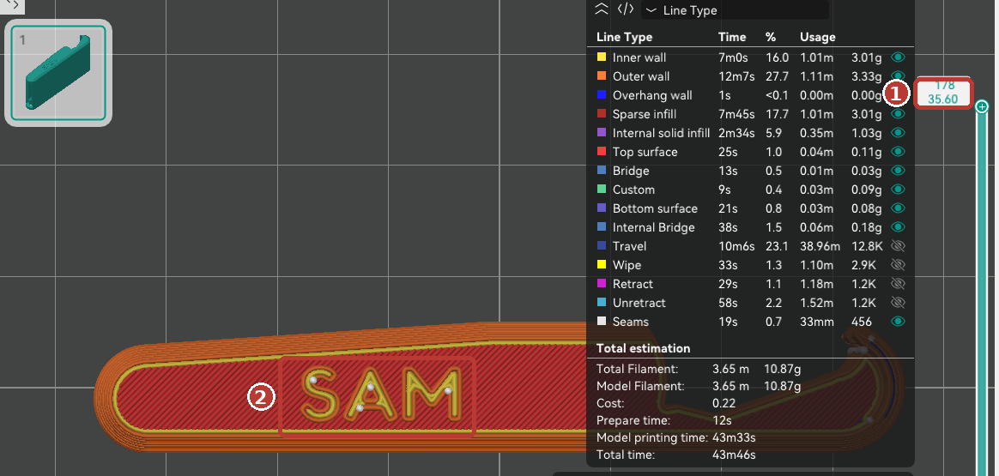
Name in a second colour on a one-colour printer: in the sliced preview, find the layer at 35.2 mm (the first layer of the letters), right-click the slider handle and choose Add Pause. When the printer pauses, swap filament and resume. Cura has no text tool: print the stand plain, or add the name in Tinkercad first.
Phone Stand Keychain · Seller Edition5
Page 6 · Print settings, assembly and use
Print it, snap it, use it
Suggested print settings
Setting
Value
Why
Orientation
As it opens (on its side)
The files are already turned the right way. The hinge, hook and lifter are shaped to print with no supports.
Supports / brim
Off / off
Not needed. Add a brim only if a corner lifts on your printer.
Layer height
0.20 mm
The 0.6 mm letters print as 3 crisp layers.
Walls
3 (or 4)
The snap clip on the flap and the click in the hook are thin, springy parts. More walls make them solid.
Infill
15–20 %
Plenty for a keychain.
Material
PLA (PETG also works)
PLA is easiest. PETG is a bit tougher for the lifter.
These are suggested starting settings. Every printer is a little different.
Snap the flap on (once, for good)
1
Hold the flap at about 45° to the body, its open clip facing the round shaft in the body's hinge slot.
2
Press firmly until it clicks. The clip is one-way: it stays on for good.
3
Fold it flat: it clicks shut under the front hook. Push the flap up from the middle cut-out to open it. It stops at the open position.
Using it
Stand: open the flap, stand the phone in the hook at the front, lean it on the flap. Made for landscape (sideways) viewing.
Can lifter: slide the slot at the tail under the can's tab and lift.
Keys: a keyring fits the 5 mm hole at the tail.
Open: the phone sits in the hook (right) and leans on the flap.
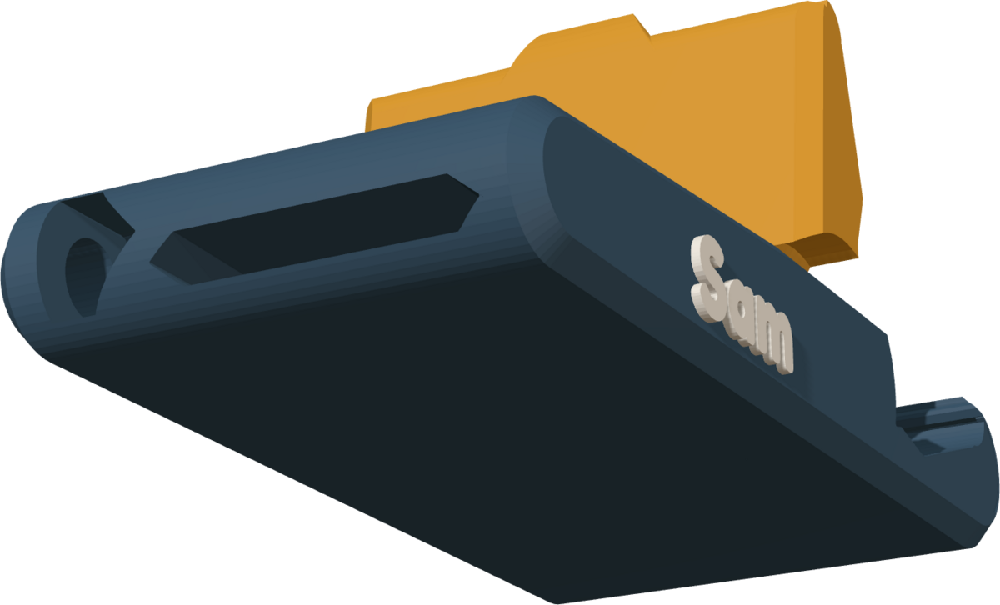
Tail: keyring hole and can tab lifter slot.
Phone Stand Keychain · Seller Edition6
Page 7 · Help
Troubleshooting & FAQ
The name is too long
Lower the Size (Bambu) or Height (Orca) to 6 mm, or use first names and initials. The Large has about 6 mm more room than the Small.
A new "Text" object appeared instead
You clicked the Ta tool with nothing (or the wrong thing) selected. Press Ctrl+Z, click text_shape in the Objects list, then Ta.
The name doesn't show in the preview
The letters must sit on the side's flat area. If they hang over the edge or the dip, drag them back. Check the top layer reads 35.60.
I want other colours
In Bambu Studio, click a filament's colour square in Project Filaments and pick a new colour. Filament 1 = name, 2 = body, 3 = flap.
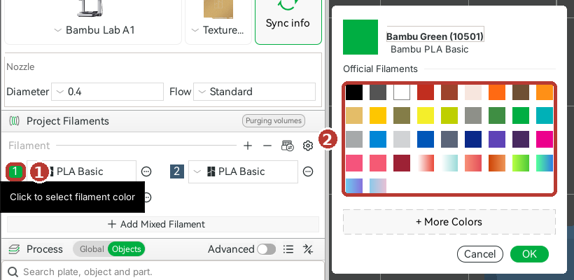
Why are the body and flap on separate plates?
They are the same height. Printed side by side in two colours, the printer would swap filament on every layer (we measured 176 swaps). On separate plates, plate 1 swaps once and plate 2 not at all. One-colour stand? Drag the flap onto plate 1.
The font is missing
Install Fredoka-Bold.ttf (included) and restart the slicer. Bambu Studio still shows the name if the font is missing, but uses another font when you edit it.
The flap is hard to snap on
Hold it at 45° and press straight down onto the shaft. If your printer runs a little tight, sand any blob off the clip's lips first.
Can I print several?
Yes. Select the stand and copy-paste it (Ctrl+C, Ctrl+V); each copy has the same name. For a different name, use File › Save Project as… for each person.
Need help?
Message us through Etsy. We're happy to help.
Seller licence: you may sell printed stands. Please don't share or resell the files. Full terms on page 8 and in SELLER-LICENSE.txt. Fredoka font: SIL Open Font License 1.1.
Phone Stand Keychain · Seller Edition7
Page 8 · Seller Licence
Selling your prints
Your licence lets you sell the printed stands. Here is what that covers, and a few tips.
You may
✔ Print as many as you like ✔ Sell the printed stands online, at craft fairs and in person ✔ Personalise them with any name, in any colours ✔ Advertise with photos of your own prints
You may not
✘ Share, sell or upload the files (3MF, STL) or this guide, changed or not ✘ Claim the design as yours ✘ Use our listing photos in your shop ✘ Pass the licence to another shop
Cost per stand (slicer estimates, Small, PLA, Bambu Lab A1)
Part
Filament
Time
Plate 1: body + name
about 15 g (incl. purge and prime tower)
about 50 min
Plate 2: flap
about 3 g
about 27 min
Total
about 18 g ≈ $0.40 of filament at $20/kg
about 1 h 17 min
Large: about 17 g + 3.5 g, about 52 + 27 min. Your printer, settings and filament price will differ.
Tips for orders
1
Several names on one plate: select the stand, copy-paste it (Ctrl+C, Ctrl+V), then click the copy's text_shape › Ta and type the next name. All the names start at the same height, so the colour swap should still happen once per plate. Check Filament change times after slicing.
2
Flaps in bulk: fill plate 2 with flaps (copy-paste). They are all the same, so print a batch in each colour you offer.
3
Save each order:File › Save Project as… with the customer's name, so a reprint takes one click.
4
Before you sell: test-print one of each size, fold it, open it, try the lifter on a can, and stand your phone in it.